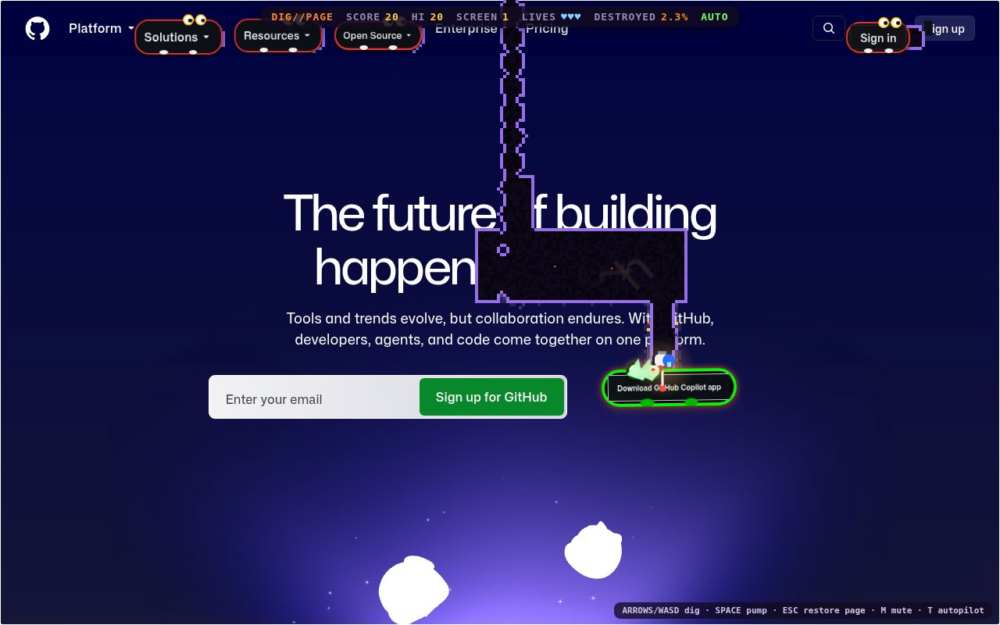
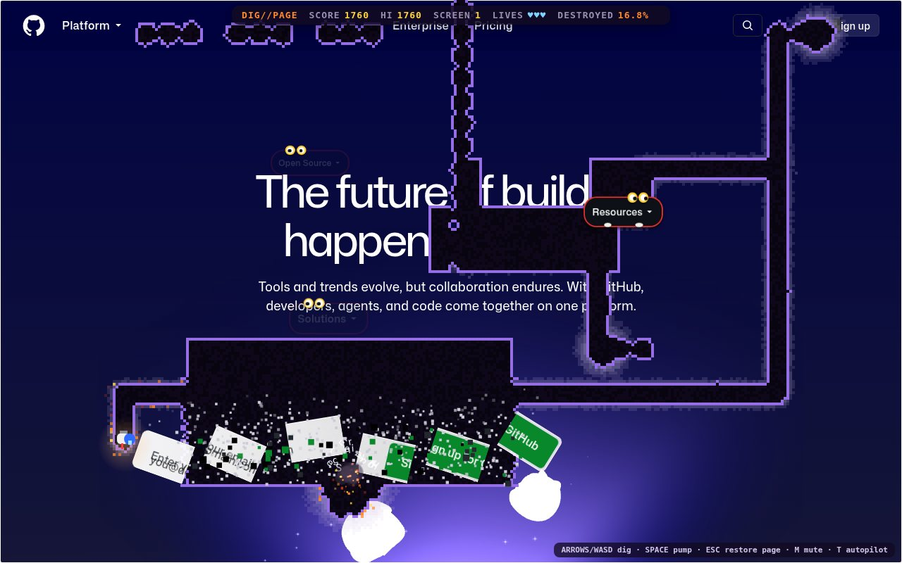
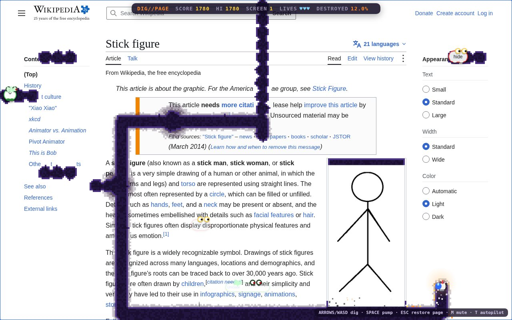

Install
Bookmarklet: drag it to your bookmarks bar
⛏ DIG//PAGEShow the bookmarks bar first (⌘⇧B on Mac, Ctrl⇧B on Windows). Then open any page and click the bookmark. Click it again or press Esc to stop. If dragging doesn't work, bookmark any page, edit the bookmark, and paste the code below in as its URL.
Show bookmarklet code
Userscript: works on sites that block bookmarklets
With Tampermonkey or Violentmonkey installed, click install, then press Alt⇧D on any page.
Developer console: no install
Copy the script, open DevTools (⌥⌘J / Ctrl⇧J), paste it into the Console, and press Enter.
How to play
| Keys | |
|---|---|
| ←↑→↓ or WASD | Dig and move |
| Space | Fire the pump, then keep pumping. Four pumps pop an element. Walk away and it slowly deflates. |
| Esc | Stop and restore the page |
| T | Autopilot: let the digger play for you |
| P · M · Enter | Pause · mute · play again after game over |
The page's text and images are the dirt. Letters you dig through fall, bounce and burn to ash. The page's buttons, links, inputs and icons are the enemies: they peel off the page, grow eyes and feet, and chase you through your tunnels, sometimes drifting through the dirt as ghosts. Winged ones breathe fire. Big images and boxes are rocks: dig underneath one and it falls, crushes whatever is below, and shatters into pieces of itself. Buttons score more than links, and deeper enemies score more. Clear the screen and the page scrolls on to the next one.
Screenshots



Try it on this page
This practice area has buttons, cards and an input to play with. Use your bookmarklet here, or just click:
Every letter in this paragraph is dirt. A plain link, another link and one more are just waiting to become enemies.
Privacy & safety
DIG//PAGE is one self-contained script with no dependencies. It makes no network requests, loads nothing from anywhere, stores nothing, collects nothing, and never runs the page's own code. It draws the game on an overlay and only hides page elements temporarily while they're "in play". Esc puts every change back exactly as it was. The source is on GitHub.
Sites that block bookmarklets
Some sites have a strict Content Security Policy that stops bookmarklets from running, for example GitHub and MDN. When that happens, clicking the bookmark does nothing. Use the userscript or the developer console instead; both work there. Browser pages like settings, extension stores, and the built-in PDF viewer never allow bookmarklets.